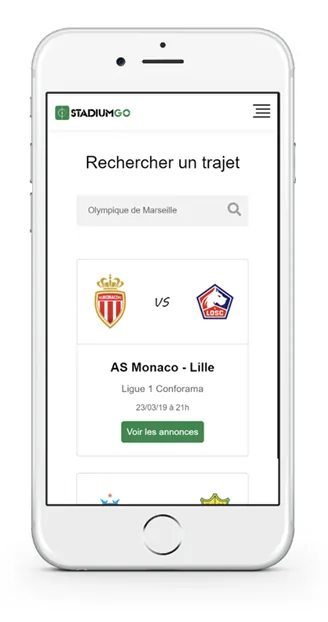
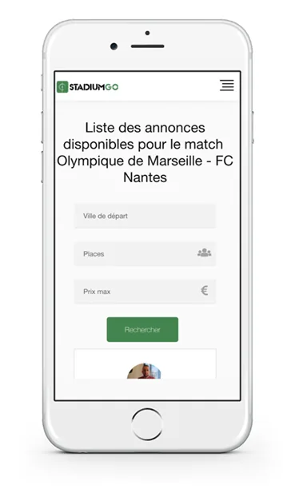
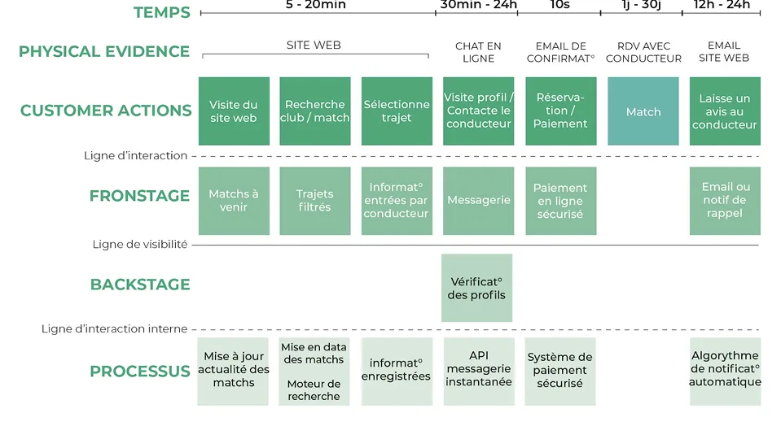
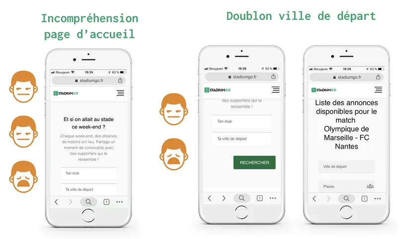
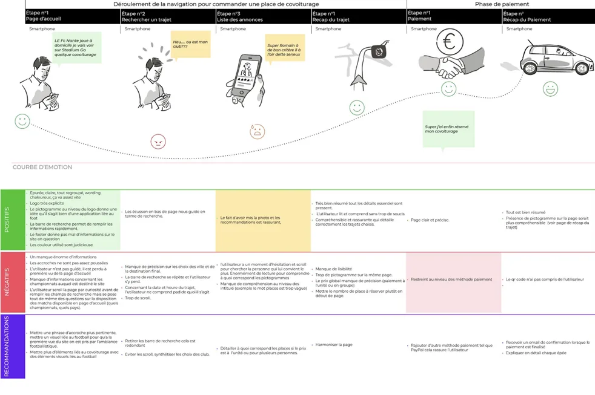
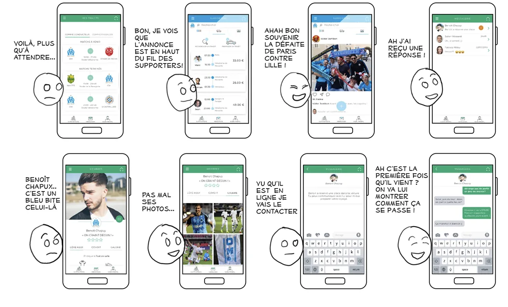
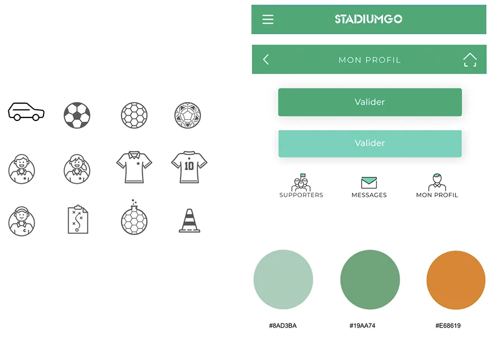

Application mobile dédiée au partage et à la rencontre autour de la passion du sport, facilitant l'accès au stade pour tous grâce à un service simple d'utilisation.
Voir le prototype Adobe XDContexte
StadiumGO est une application mobile dont l'objectif est de favoriser le partage et la rencontre autour de la passion du sport tout en facilitant l'accès au stade à tous, grâce à un service simple d'utilisation.
Le client souhaitait une intervention graphique, ergonomique et d'amélioration de l'expérience utilisateur sur l'application mobile et le site internet.
J'ai conduit l'ensemble de la démarche UX : de la recherche utilisateur jusqu'au prototype interactif, en passant par les tests et l'élaboration du design system.
Problèmes de "guidage" et de "contrôle utilisateur" identifiés lors de l'audit ergonomique initial - les utilisateurs ne comprenaient pas les étapes et ne pouvaient pas corriger facilement leurs erreurs.
Améliorer l'expérience utilisateur de l'application mobile en rendant le service plus intuitif, accessible et engageant pour tous les profils d'utilisateurs.
1 sur 2 utilisateurs rencontrait des problèmes de guidage · 7 sur 10 seraient prêts à utiliser une application de covoiturage pour se rendre au stade.
Mon rôle
Analyse selon les critères de Bastien & Scapin - guidage, adaptabilité, gestion des erreurs, cohérence.
Questionnaires, guerilla testing, interviews et construction du blueprint de service.
Experience map, storyboard, persona et parcours utilisateur pour visualiser les points de friction.
UI Kit, maquettes haute fidélité et prototype interactif réaliste sur Figma.
Audit ergonomique
L'utilisateur ne sait pas où il en est dans le processus. Les étapes ne sont pas clairement indiquées et les messages d'erreur sont insuffisants.
L'utilisateur ne peut pas facilement revenir en arrière ou corriger une erreur. Le flux de navigation est trop rigide et peu forgiving.
Deux problèmes majeurs identifiés : incompréhension de la page d'accueil et doublon de la ville de départ qui crée de la confusion.


Blueprint de service

Résultats questionnaire
Processus de design
Analyse du service existant selon les heuristiques, cartographie du blueprint pour comprendre le fonctionnement du service en interne et évaluer les ressources nécessaires.
Tests utilisateurs terrain pour identifier les points de friction réels. Questionnaire quantitatif pour valider les hypothèses et comprendre les usages actuels.
Cartographie des émotions de l'usager avant, pendant et après l'interaction. Storyboard illustrant le parcours idéal pour orienter les décisions de conception.
Élaboration d'un UI Kit cohérent avec l'identité de StadiumGO, maquettes haute fidélité et prototype interactif réaliste et fidèle à ce que pourrait être l'interface finale.
Guerilla testing

Experience map

Storyboard

UI Kit
Au delà des spécificités graphiques établies dans l'UI Kit, j'ai tenté de créer un univers convivial et chaleureux pour marquer l'idée de rencontre et de partage. Grâce à ce design system réfléchi en amont, j'ai pu élaborer un prototype réaliste et fidèle à ce que pourrait être une interface finale.
